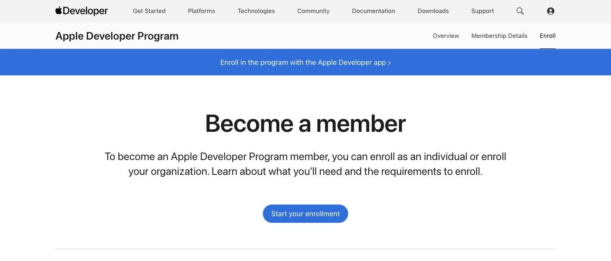
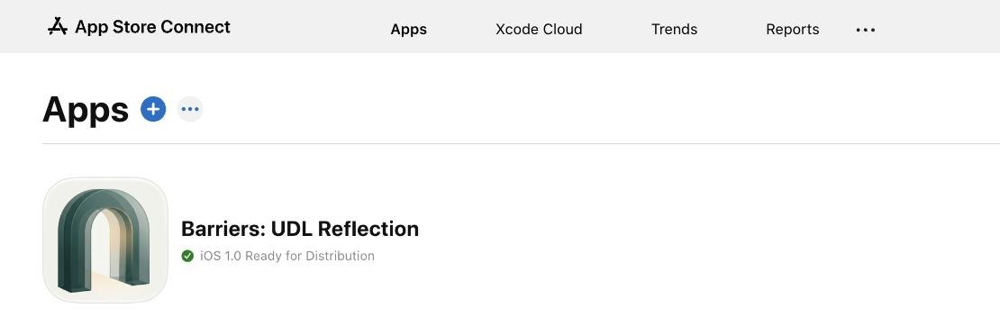
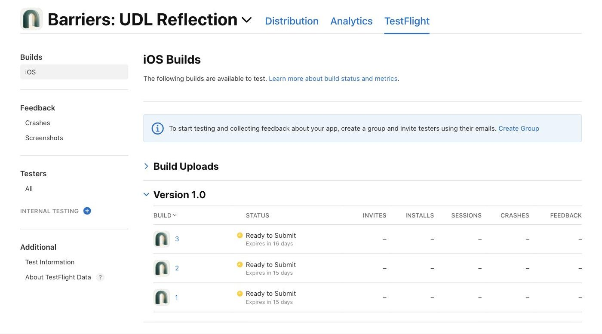
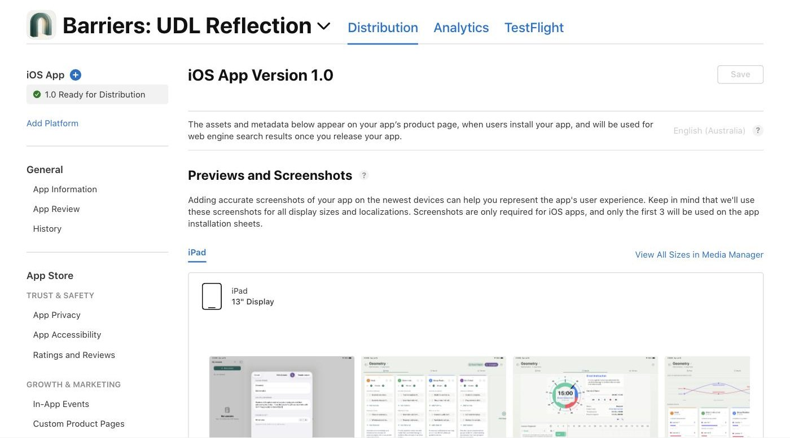

App Store
To put an app on the App Store, you join the Apple Developer Program, upload a build from Xcode to App Store Connect, test it with TestFlight, and send it to App Review.
Best for
An app made in Xcode that students or colleagues install on their own iPads and iPhones.
Start here
developer.apple.com/programs
Membership is US$99 a year. A school that enrols as an organisation can ask for a fee waiver, for free apps.
Exercise 1: Join the Apple Developer Program

- Choose Start your enrollment, sign in with your Apple Account, and enrol as yourself or for the school. Enrolling the school needs a D-U-N-S Number and someone with the authority to sign for it.
- Apple checks your details. Then you agree to the licence agreement and pay, or ask for a fee waiver.
Enrolling the school also needs a work email on the school’s domain and a public website. A D-U-N-S Number is free, but allow about a week to get one. If you enrol as yourself instead, your own name shows on the App Store as the seller.
Exercise 2: Create the app in App Store Connect

- In App Store Connect, open Apps and press +.
- Choose New App. Fill in the platform, name, primary language, bundle ID and SKU (your own code for the app), and press Create.
Exercise 3: Upload a build and test it with TestFlight

- In Xcode, choose Product, then Archive.
- Choose Distribute App, then TestFlight & App Store, and press Distribute. The build appears in App Store Connect.
- In TestFlight, add testers and send them an invitation.
Internal testers are up to 100 people on your developer team. Anyone else is an external tester, and the first build for them has a short TestFlight review. Builds expire after 90 days. School Apple Accounts from Apple School Manager can’t be testers, so test with colleagues’ own Apple Accounts.
Test with a colleague before students, the same way as Test 01: say nothing, and watch where they hesitate.
Exercise 4: Send it to App Review

- Fill in the App Store page: the description, screenshots, privacy details, a privacy policy link and the age rating.
- Under Build, press +, choose your build, and press Done, then Save. Press Add for Review, then Submit for Review. Apple reviews most apps within 24 hours.
- When it is approved, press Release This Version, unless you chose to release it automatically.
An app only for HKIS can be private instead of on the public App Store. In Pricing and Availability, choose Private, and enter HKIS’s Apple School Manager Organization ID. It still goes through App Review, and you can’t change the choice after it is approved. HKIS then puts it on iPads. Ask your Technology Coach.
Push it further
Ideas for when your first app is in testing.
Write the privacy details before you build, so you only collect what you need.
Ask Claude to write your App Store description, then make it yours.
Share it privately inside HKIS, through Apple School Manager, instead of on the public App Store.
Videos
Each video loads only when you press play. They are from independent creators, not from Apple.
Setting up an Apple Developer account for an organisation, the route for a school (Exercise 1). It is older than this guide, so Apple’s pages may look different now.
The whole TestFlight round in eight minutes (Exercise 3): turn TestFlight on in App Store Connect, upload a build from Xcode, and add internal and external testers.
Before you press Submit for Review (Exercise 4): where Apple’s review guidelines are, and the usual reasons for rejection, such as crashes, broken links, placeholder content and privacy policy rules.